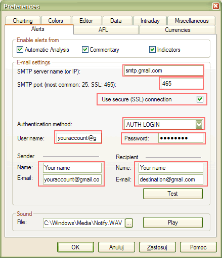
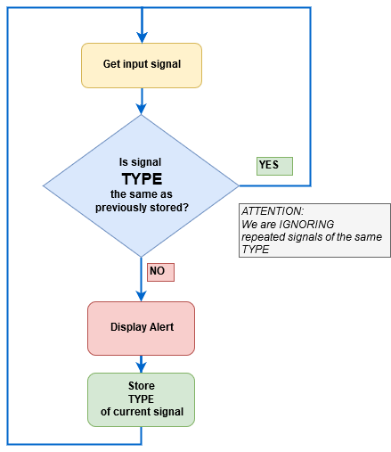

Introduction
AmiBroker allows you to define formula-based alerts. When an alert is triggered, text can be displayed, a user-defined sound can be played back, an email notification can be sent, and any external application can be launched. This is all handled by a single AlertIF function.
By default, all alerts generate text that is displayed in the Alert Output window.
To show this window, you have to select the Window->Alert Output menu.
There is also the Easy Alerts window that allows you to define simple alerts that do not require any coding (but do not offer the full flexibility of the AlertIF function).
Settings
Alert-related settings are present in the "Alerts" tab of the Tools->Preferences window.
It allows you to define email account settings, test sound output, and define which parts of AmiBroker can generate alerts via the AlertIF function.
The Email settings page now allows you to choose among most popular authorization schemes like: AUTH LOGIN (most popular), POP3-before-SMTP (popular), CRAM-MD5, LOGIN PLAIN.
"Enable alerts from" checkboxes allow you to selectively enable/disable alerts generated by Automatic Analysis, Commentary/Interpretation, and custom indicators.
The Alert Output window now has an additional column that shows the source of the alert - whether this is Automatic Analysis, Commentary, or one of your custom indicators. This makes it easier to find out which part of AmiBroker generates alerts.
New in AmiBroker 5.30 - support for SSL (secure connection) used by Gmail, for example.
In order to enable SSL support, you need to follow these steps:
1. Download and run the SSL add-on from http://www.amibroker.com/bin/SSLAddOn.exe
2. Configure (Tools->Preferences->Alerts) with SSL enabled as shown below

AlertIF function
AlertIF function is similar to WriteIF. However, instead of just writing the text to the output window (commentary/interpretation), it allows you to:
The syntax is as follows:
AlertIf( BOOLEAN_EXPRESSION, command, text, type = 0, flags = 1+2+4+8, lookback = 1 );
1. BOOLEAN_EXPRESSION is the expression that if it evaluates to True (non-zero value) triggers the alert. If it evaluates to False (zero value), no alert is triggered. Please note that only the lookback most recent bars are considered.
2. The command string defines the action taken when an alert is triggered. If it is empty, the alert text is simply displayed in the Alert Output window (Window->Alert Output). Other supported values of the command string are:
SOUND the-path-to-the-WAV-file
EMAIL
EXEC the-path-to-the-file-or-URL <optional args>
SOUND command plays the WAV file once.
EMAIL command sends an email to the account defined in the settings (Tools->Preferences->E-mail). The format of the email is as follows:
Subject: Alert type_name (type) Ticker on Date/Time
Body: text
EXEC command launches an external application, file, or URL specified after the EXEC command. <optional args> are attached after the file name, and text is attached at the end
3. The text parameter defines the text that will be printed in the output window or sent via email or added as an argument to the application specified by the EXEC command
4. The type parameter defines the type of the alert. Pre-defined types are 0 - default, 1 - buy, 2 - sell, 3 - short, 4 - cover. You may specify higher values, and they will be named "other". This type is important; see the comments below.
5. The flags parameter controls the behavior of the AlertIF function. This field is
a combination (sum) of the following values:
(1 - display text in the output window, 2 - make a beep (via the computer speaker),
4 - don't display repeated alerts of the same type, 8 - don't display repeated
alerts with the same date/time). By default, all these options are turned ON.
6. The lookback parameter controls how many recent bars are checked.
Examples:
Buy = Cross( MACD(), Signal() );
Sell = Cross( Signal(), MACD() );
Short = Sell;
Cover = Buy;
AlertIF( Buy, "EMAIL", "A sample alert on "+FullName(),
1 );
AlertIF( Sell, "SOUND C:\\Windows\\Media\\Ding.wav", "Audio
alert", 2 );
AlertIF( Short, "EXEC Calc.exe", "Launching external application",
3 );
AlertIF( Cover, "", "Simple text alert", 4 );
Note that the EXEC command uses the ShellExecute function and allows not only EXE files but also URLs.
Internal logic
The AlertIF function implements internal logic in the form of a finite-state machine that prevents repeated signals of the same type from occurring. State (i.e., the type of the last alert) is stored on a per-symbol basis. Thus, each symbol has its "last alert" attached. For per-symbol logic, see the flowchart below:

Notes
1. Please once again note that by default, the AlertIF function does not generate repetitive signals when the same scan is run multiple times. During experimentation, you may prefer to get repeated signals in subsequent scans. To do so, you should change the default flags to 1 + 2:
AlertIF( condition, "", "Text", 1, 1+2 );
2. If you want to generate the alert only on a COMPLETED bar, you may need to add this code:
barcomplete = BarIndex() < LastValue(BarIndex());
AlertIF( barcomplete AND condition, "", "Text",
1 );
3. There are simpler functions that perform actions like sending an email, playing a sound, or executing an external program without being involved in complex internal logic: